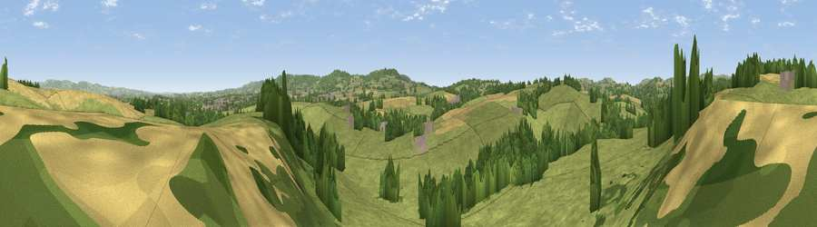

Viewpoint near Holywell Lake
#27511 in England · top 58% of its area beats it · near Holywell LakeWhere it is
The exact computed spot (ST 10975 21675). Click the marker for map links.
The view, rendered

A 360° render of this exact spot computed from the terrain model, tree cover and land cover — summer colours, afternoon light, calibrated against photographs of famous viewpoints. Real trees, hedges and buildings will differ in detail.
The panorama
Grey silhouette: terrain skyline in each direction (720 bearings, Earth curvature and refraction included). Dashed green: skyline with trees (+15 m) and buildings (+8 m) as obstacles. Blue strip: how far the ground is visible on each bearing.
Where the view opens
Wedge length = distance to the farthest visible ground on that bearing (vegetation-aware). Rings at 10, 25 and 50 km.
What fills the view
73% grassland · 15% woodland · 9% cropland · 2% built-up
Angular shares of the visible panorama (visual magnitude), not map area. Landscape diversity 0.35 (0–1 Shannon).
Key numbers
More beautiful places nearby
The staircase of upgrades: each row has a higher view potential than everything closer. Driving times are estimates from straight-line distance, calibrated against real road routing — check an actual route before setting out.
| Place | Direction | Drive | Score |
|---|---|---|---|
| Viewpoint near Langford Budville | NNW · 1 km | ~2 min | 51.1 |
| Viewpoint near Langford Budville | NNW · 1 km | ~4 min | 52.9 |
| Viewpoint near Holywell Lake | SW · 3 km | ~6 min | 55.4 |
| Viewpoint near Milverton | N · 4 km | ~10 min | 65.1 |
| Viewpoint near Sampford Arundel | SSE · 5 km | ~11 min | 72.3 |
| Wellington Hill | SSE · 5 km | ~11 min | 74.9 |
| Viewpoint near Wiveliscombe | NW · 6 km | ~13 min | 75.1 |
| Viewpoint near Pitminster | ESE · 10 km | ~19 min | 77.3 |
50.98757, -3.26973 · source: screening · position refined by local search. Computed location — check access rights before visiting.